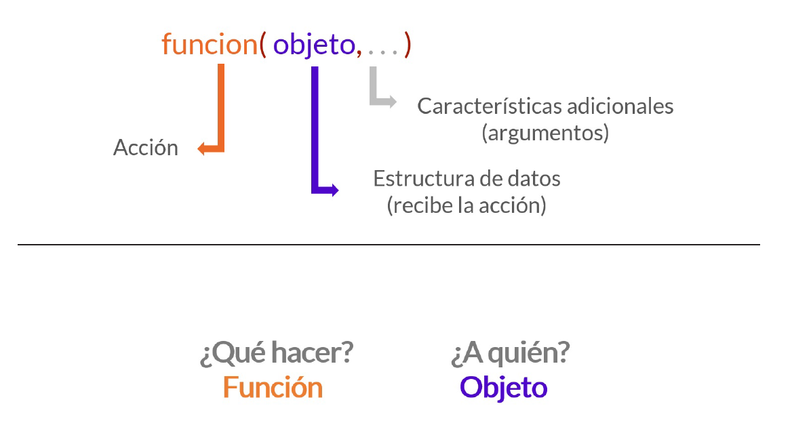

# : Comentarios que no se ejecutan como comandos
# + : Sigue el comando en la próxima linea
# ; : Para escribir más de una función en la misma líneaLaboratorio 1
Iniciación en R
Conceptos claves
Objeto: contenedores de información que permiten al usuario realizar procedimientos numéricos, estadísticos, tabulaciones, entre otros.
Estructuras de datos: son formatos de almacenamiento de información.
Funciones: acciones que se realizan sobre los objetos y que producen un output. Por ejemplo, calcular la media sobre un vector sería: mean(objeto)
Coerción implícita: proceso en el cual el lenguaje de programación define un ajuste por defecto.
En este taller nos enfocaremos en una introducción a R para el procesamiento datos. Para instala R y RStudio en tu computador puedes recurrir a los siguientes enlaces:
También puedes ver el siguiente video tutorial: https://jd-conejeros.com/blog/2023/2023-03-15-r-rstudio/
Recuerda que puedes descargar y reproducir este proyecto directo en RStudio dando Click aquí ⏎
Interactuando con R y RStudio
Los comentarios que no se ejecutan como comandos, en otras palabras, es código no ejecutable:
Recomendación general: todo lo que tenga que ver con procesamiento, análisis de bases de datos, entre otros, debe ser en un lenguaje estandarizado: sin tilde, ñ, caracteres especiales ni mayúsculas. Con esto se evitan bastantes problemas en un inicio.
Los directorios son relevantes, pues nos entregan una ruta relativa a la cual acceder en nuestro computador. Para esto podemos usar las siguientes funciones en R:
Al inicio es complejo trabajar con rutas relativas, ya que implica a) uno debe investigar la ruta a la cual acceder en su computador y b) es fácil cometer errores de tipeo al escribir. Esto puede volver tortuoso el proceso al inicio, además fijar rutas relativas puede variar según el sistema operativo:
#Windows (\)
setwd("\Users\josedanielconejeros\Dropbox")
#Mac (/)
setwd("/Users/josedanielconejeros/Dropbox")La mejor opción, será trabajar proyectos en R. Puedes crear proyectos de la siguiente manera: <video https://www.youtube.com/watch?v=FnkdlMIHYqQ>
Objetos en R
En términos generales, todos los elementos que maneja R son objetos: un valor numérico es un objeto, un vector es un objeto, una función es un objeto, una base de datos es un objeto, un gráfico es un objeto, etc. Los objetos son entes con datos almacenados, en palabras más sencillas, contenedores de información que permiten al usuario realizar procedimientos numéricos, estadísticos, tabulaciones, entre otros.
Que R sea un lenguaje de programación orientado a objetos (Object-Oriented Programming) significa que una misma función hace cosas distintas según la clase del objeto que recibe como argumento, pudiendo incluso no hacer nada (o producir un error) si se le pasan argumentos de una clase inadecuada.
A continuación veremos algunos objetos de ejemplo:
Vectores numéricos
Podemos considerar vectores de uno o varios elementos
Si quisiera imprimir estos vectores puede escribir el nombre del objeto
a1[1] 1a2[1] 1a3[1] "1" "hola" "chao" "4" Podemos construir secuencias de valores
#Secuencia de valores
1:4[1] 1 2 3 44:1[1] 4 3 2 1?seq
seq(1, 4) [1] 1 2 3 4seq(4, 1)[1] 4 3 2 1-1:2[1] -1 0 1 2seq(-1, 2)[1] -1 0 1 2seq(from=2, to=8, by=2)[1] 2 4 6 8seq(0, 1, by=0.1) [1] 0.0 0.1 0.2 0.3 0.4 0.5 0.6 0.7 0.8 0.9 1.0seq(0, 1, length=10) [1] 0.0000000 0.1111111 0.2222222 0.3333333 0.4444444 0.5555556 0.6666667
[8] 0.7777778 0.8888889 1.0000000rep(0:1, 10) [1] 0 1 0 1 0 1 0 1 0 1 0 1 0 1 0 1 0 1 0 1?length # Para consultar argumentos de la funciónLa importancia de los elementos que componen el objeto:
numeros_palabras <- c(1, "hola" , "chao" , 4)
numeros_palabras[1] "1" "hola" "chao" "4" secuencia <- seq(0, 1, length=11)
secuencia [1] 0.0 0.1 0.2 0.3 0.4 0.5 0.6 0.7 0.8 0.9 1.0secuencia*numeros_palabrasError in secuencia * numeros_palabras: non-numeric argument to binary operatorEn este caso se produce porque está intentando multiplicar un vector de texto por uno numérico.
Conceptos claves
Coerción implícita: proceso en el cual el lenguaje de programación define un ajuste por defecto. En este caso c(1, "hola" , "chao" , 4) asume por defecto que el vector será de caracteres.
También podemos realizar operaciones aritméticas con vectores:
c(1, 2, 3, 4)/2[1] 0.5 1.0 1.5 2.0(1:4)/2[1] 0.5 1.0 1.5 2.0(1:4)*(4:1)[1] 4 6 6 4[1] 4 6 6 4[1] 5 5 7 7Warning in c(1, 2, 3, 4) + c(4, 3, 2): longer object length is not a multiple
of shorter object length[1] 5 5 5 8Podemos realizar operaciones aritméticas con los objetos que componen esos vectores
secuencia <- seq(0, 1, length=11)
secuencia [1] 0.0 0.1 0.2 0.3 0.4 0.5 0.6 0.7 0.8 0.9 1.0secuencia <- secuencia*secuencia
secuencia [1] 0.00 0.01 0.04 0.09 0.16 0.25 0.36 0.49 0.64 0.81 1.00secuencia^2 [1] 0.0000 0.0001 0.0016 0.0081 0.0256 0.0625 0.1296 0.2401 0.4096 0.6561
[11] 1.0000promedio <- sum(secuencia)/11
promedio[1] 0.35String y factores
Tendremos instancias para profundizar en este tipo de objetos. Lo importante es recordar la coerción implíca subyacente a la hora de trabajar con textos.
#Dummy
sexo <- c("Femenino", "Masculino", "Masculino", "Femenino")
sexo[1:2] [1] "Femenino" "Masculino"sexo <- c(1,0,0,1)
sexo[1:2] [1] 1 0#Nominales
animales <- c("Elefante", "Jirafa", "Mono", "Caballo")
animales[1][1] "Elefante"#Ordinal
acuerdo <- c("Muy en Desacuerdo", "Desacuerdo", "Ni en desacuerdo", "Ni en desacuerdo" ,
"Deacuerdo", "Muy deacuerdo")
acuerdo[5][1] "Deacuerdo"¿Cuál es el problema con estas variables?
class(sexo)[1] "numeric"En ciertas operaciones, como la visualización de datos, contar con un formato más ordenado a la hora de construir una variable cualitativa es clave. Para esto utilizamos los factores.
Los factores son variables que cuenta con etiquetas que permiten representar sus valores numéricos. A continuación un ejemplo:
[1] 0 1 1 0
Levels: 0 1[1] Mujer Hombre Hombre Mujer
Levels: Mujer Hombreclass(sexo)[1] "factor"Matrices, dataframes y listas
Matrices
Las matrices son arreglos bidimensionales (filas, columnas) y solo cuentan con elementos de la misma naturaleza. Por ejemplo, la siguiente matriz cuenta con solo elementos de tipo numérico:
#Ejemplo de matriz
matrix(1:9,3,3) #Matriz de 3filasx3columnas con valores del 1 al 9 [,1] [,2] [,3]
[1,] 1 4 7
[2,] 2 5 8
[3,] 3 6 9También podemos considerar las matrices sobre objetos y realizar acciones sobre ellas:
x <- matrix(1:9,3,3)
x [,1] [,2] [,3]
[1,] 1 4 7
[2,] 2 5 8
[3,] 3 6 9# Podemos ver las dimensiones de la matriz (fila, columna)
dim(x)[1] 3 3Construyamos las siguientes matrices:
# Podemos definir objetos como matrices
y <- matrix(1:8,2,4,byrow = FALSE) #Genera una matriz con 2 filas y 4 columnas
y [,1] [,2] [,3] [,4]
[1,] 1 3 5 7
[2,] 2 4 6 8dim(y)[1] 2 4z <- matrix(1:8,2,4,byrow = TRUE) #Genera la matriz completándola por filas
z [,1] [,2] [,3] [,4]
[1,] 1 2 3 4
[2,] 5 6 7 8dim(z)[1] 2 4A continuación aplicaremos operaciones matemáticas con dichas matrices:
# Suma
sum <- y + z
sum [,1] [,2] [,3] [,4]
[1,] 2 5 8 11
[2,] 7 10 13 16# Resta
diff <- y - z
diff [,1] [,2] [,3] [,4]
[1,] 0 1 2 3
[2,] -3 -2 -1 0# Transponer
t(y) [,1] [,2]
[1,] 1 2
[2,] 3 4
[3,] 5 6
[4,] 7 8# Multiplicar/dividir por un escalar
y*2 [,1] [,2] [,3] [,4]
[1,] 2 6 10 14
[2,] 4 8 12 162*y [,1] [,2] [,3] [,4]
[1,] 2 6 10 14
[2,] 4 8 12 16y/2 [,1] [,2] [,3] [,4]
[1,] 0.5 1.5 2.5 3.5
[2,] 1.0 2.0 3.0 4.0# Multiplicación elemento a elemento
y*z [,1] [,2] [,3] [,4]
[1,] 1 6 15 28
[2,] 10 24 42 64La multiplicación de matrices no es elemento a elemento. En este caso R tiene operadores especiales para la matemática matricial:
y %*% zError in y %*% z: non-conformable arguments¿Cuál es el error? El número de columnas de la primera matriz debe ser igual al número de filas de la segunda. Construímos nuestra matriz cuadrada:
y # Matriz original [,1] [,2] [,3] [,4]
[1,] 1 3 5 7
[2,] 2 4 6 8y_cuadrada <- y[1:2,1:2] # Matriz cuadrada
# Multiplicación de matrices
y_cuadrada %*% z [,1] [,2] [,3] [,4]
[1,] 16 20 24 28
[2,] 22 28 34 40El determinante de una matriz es se obtiene al restar la multiplicación de los elementos de la diagonal principal de la matriz y la multiplicación de los elementos de la diagonal secundaria de la misma matriz. Esto nos será útil pues permite saber si estamos frente a una matriz singular (\(det=0\)) o no singular (\(det\neq0\)).
# Determinante
det(y_cuadrada)[1] -2Los determinantes son esenciales cuando queremos encontrar la matriz inversa y con esto aplicar técnicas de modelamiento estadístico como la regresión lineal (\(\hat{\boldsymbol{\beta}} = (\mathbf{X}^T\mathbf{X})^{-1}\mathbf{X}^T\mathbf{Y}\)).
y_invertida <- solve(y_cuadrada)
y_invertida [,1] [,2]
[1,] -2 1.5
[2,] 1 -0.5Si multiplicamos la matriz original por la inversa obtenemos la identidad:
# Comprobamos
y_cuadrada %*% y_invertida [,1] [,2]
[1,] 1 0
[2,] 0 1Otras operaciones útiles con matrices:
# Rango de una matriz
qr(y_cuadrada)$qr
[,1] [,2]
[1,] -2.2360680 -4.9193496
[2,] 0.8944272 -0.8944272
$rank
[1] 2
$qraux
[1] 1.4472136 0.8944272
$pivot
[1] 1 2
attr(,"class")
[1] "qr"qr(y_cuadrada)$rank[1] 2# Diagonal de una matriz
y_cuadrada [,1] [,2]
[1,] 1 3
[2,] 2 4diag(y_cuadrada)[1] 1 4# Construímos la matriz identidad
diag(5) [,1] [,2] [,3] [,4] [,5]
[1,] 1 0 0 0 0
[2,] 0 1 0 0 0
[3,] 0 0 1 0 0
[4,] 0 0 0 1 0
[5,] 0 0 0 0 1Podemos construir una matriz de datos:
Construímos las matrices:
# Unimos las matrices por separado
matriz_a <- cbind(edad, sexo) # Columnas
matriz_a edad sexo
[1,] 23 1
[2,] 45 0
[3,] 67 1
[4,] 89 0matriz_b <- cbind(peso, altura)
matriz_b peso altura
[1,] 80 180
[2,] 60 160
[3,] 70 200
[4,] 50 140# Combinar matrices
matriz <- cbind(matriz_a, matriz_b)
matriz edad sexo peso altura
[1,] 23 1 80 180
[2,] 45 0 60 160
[3,] 67 1 70 200
[4,] 89 0 50 140matriz[1,2] #Podemos ver el elemento 1 de la columna 2sexo
1 Más detalles sobre matrices:
Bates, Douglas, Martin Maechler, and Mikael Jagan. 2022. Matrix: Sparse and Dense Matrix Classes and Methods. https://cran.r-project.org/web/packages/Matrix/Matrix.pdf ⏎
Marcos de datos
Un marco de datos (O dataframe) es un objeto bidimensional, pero a diferencia de las matrices (numéricas), pueden almacenar objetos de distinta naturaleza (alfanuméricos). En términos más precisos es un arreglo de vectores ordenados por columnas. Podemos transformar facilmente nuestra matriz en un marco de datos.
class(matriz)[1] "matrix" "array" # Transformamos a un marco de datos
data <- as.data.frame(matriz)
class(data)[1] "data.frame"Dada su estructura bidimensional, podemos extraer información desde los marcos de datos aplicando la lógica [fila, columna]. Veamos un ejemplo:
data[1] # Columna edad
1 23
2 45
3 67
4 89data["edad"] # Columna edad
1 23
2 45
3 67
4 89data[1,1] # Fila, columna[1] 23data[,1] # Fila[1] 23 45 67 89Una forma de acceder a las variables de una marco de datos es aplicar un indexador $, por ejemplo:
data$edad[1] 23 45 67 89Esto es factible ya que el marco de datos no es más que un arreglo de vectores.
Listas
La lista representa el siguiente nivel de complejidad en las estructuras de datos que R es capaz de manejar. Podemos entender una lista como un contenedor de objetos que pueden ser de cualquier clase: números, vectores, matrices, funciones, data.frames, incluso otras listas. Una lista puede contener a la vez varios de estos objetos, que pueden ser además de distintas dimensiones.
Veamos un ejemplo:
#Creamos una lista
#matriz, valor, vector numérico, vetor de caracteres
objeto <- list(matriz, promedio, sexo, animales)
objeto[[1]]
edad sexo peso altura
[1,] 23 1 80 180
[2,] 45 0 60 160
[3,] 67 1 70 200
[4,] 89 0 50 140
[[2]]
[1] 170
[[3]]
[1] 1 0 1 0
[[4]]
[1] "Elefante" "Jirafa" "Mono" "Caballo" Podemos acceder a la información de las listas de variables maneras:
objeto[[1]] edad sexo peso altura
[1,] 23 1 80 180
[2,] 45 0 60 160
[3,] 67 1 70 200
[4,] 89 0 50 140También es posible realizar operaciones con las listas:
objeto[[1]]*2 edad sexo peso altura
[1,] 46 2 160 360
[2,] 90 0 120 320
[3,] 134 2 140 400
[4,] 178 0 100 280Estas estructuras de datos serán bastante útiles a la hora de extraer información de funciones, realizar procesos iterativos y la extracción de datos desde la web.
Operadores en R
Los operadores en R nos permiten complementar las acciones que estamos realizando sobre los objetos. Los más utilizados son:
Operadores lógicos
-
&= Y -
|= O -
!= Negación -
~= Negación
Operadores aritméticos
-
+= Suma -
-= Resta -
*= Multiplicación -
/= División -
^= Potencia
Operadores relacionales
-
>= Mayor que -
<= Menor que -
>== Mayor o igual que -
<== Menor o igual que -
=== Igual -
!== No igual -
~== No igual
Otros
-
NA= Valor perdido
Veamos algunos ejemplos:
# Definamos valores
a <- 3
b <- 2.999
c <- 1
# Apliquemos las condiciones
c != a[1] TRUEa == b # ¿Qué pasa si solo uso =?[1] FALSEa > b [1] TRUEb < c[1] FALSETrate de identificar los valores resultantes que obtuvo:
a > b & b < c[1] FALSEa > b | b < c[1] TRUEFunciones y argumentos
Funciones
Las funciones son acciones que se realizan sobre los objetos en R, operan bajo la siguiente lógica:

Veamos algunos ejemplos:
# Definamos objetos
a <- seq(1:100)
b <- c("uno", "dos", "tres")
# Apliquemos las funciones
log("a")Error in log("a"): non-numeric argument to mathematical functionlog(b)Error in log(b): non-numeric argument to mathematical function# Apliquemos sobre los objetos
log(a) # Por DEFAULT es logaritmo natural, en base a euler 2,718. [1] 0.0000000 0.6931472 1.0986123 1.3862944 1.6094379 1.7917595 1.9459101
[8] 2.0794415 2.1972246 2.3025851 2.3978953 2.4849066 2.5649494 2.6390573
[15] 2.7080502 2.7725887 2.8332133 2.8903718 2.9444390 2.9957323 3.0445224
[22] 3.0910425 3.1354942 3.1780538 3.2188758 3.2580965 3.2958369 3.3322045
[29] 3.3672958 3.4011974 3.4339872 3.4657359 3.4965076 3.5263605 3.5553481
[36] 3.5835189 3.6109179 3.6375862 3.6635616 3.6888795 3.7135721 3.7376696
[43] 3.7612001 3.7841896 3.8066625 3.8286414 3.8501476 3.8712010 3.8918203
[50] 3.9120230 3.9318256 3.9512437 3.9702919 3.9889840 4.0073332 4.0253517
[57] 4.0430513 4.0604430 4.0775374 4.0943446 4.1108739 4.1271344 4.1431347
[64] 4.1588831 4.1743873 4.1896547 4.2046926 4.2195077 4.2341065 4.2484952
[71] 4.2626799 4.2766661 4.2904594 4.3040651 4.3174881 4.3307333 4.3438054
[78] 4.3567088 4.3694479 4.3820266 4.3944492 4.4067192 4.4188406 4.4308168
[85] 4.4426513 4.4543473 4.4659081 4.4773368 4.4886364 4.4998097 4.5108595
[92] 4.5217886 4.5325995 4.5432948 4.5538769 4.5643482 4.5747110 4.5849675
[99] 4.5951199 4.6051702log(a, base=10) [1] 0.0000000 0.3010300 0.4771213 0.6020600 0.6989700 0.7781513 0.8450980
[8] 0.9030900 0.9542425 1.0000000 1.0413927 1.0791812 1.1139434 1.1461280
[15] 1.1760913 1.2041200 1.2304489 1.2552725 1.2787536 1.3010300 1.3222193
[22] 1.3424227 1.3617278 1.3802112 1.3979400 1.4149733 1.4313638 1.4471580
[29] 1.4623980 1.4771213 1.4913617 1.5051500 1.5185139 1.5314789 1.5440680
[36] 1.5563025 1.5682017 1.5797836 1.5910646 1.6020600 1.6127839 1.6232493
[43] 1.6334685 1.6434527 1.6532125 1.6627578 1.6720979 1.6812412 1.6901961
[50] 1.6989700 1.7075702 1.7160033 1.7242759 1.7323938 1.7403627 1.7481880
[57] 1.7558749 1.7634280 1.7708520 1.7781513 1.7853298 1.7923917 1.7993405
[64] 1.8061800 1.8129134 1.8195439 1.8260748 1.8325089 1.8388491 1.8450980
[71] 1.8512583 1.8573325 1.8633229 1.8692317 1.8750613 1.8808136 1.8864907
[78] 1.8920946 1.8976271 1.9030900 1.9084850 1.9138139 1.9190781 1.9242793
[85] 1.9294189 1.9344985 1.9395193 1.9444827 1.9493900 1.9542425 1.9590414
[92] 1.9637878 1.9684829 1.9731279 1.9777236 1.9822712 1.9867717 1.9912261
[99] 1.9956352 2.0000000log(2.718) # Cercano a 1 porque euler elevado a 1 = euler[1] 0.9998963log(100, base=10)[1] 2log10(100) # Forma equivalente de lo anterior[1] 2log10(a) [1] 0.0000000 0.3010300 0.4771213 0.6020600 0.6989700 0.7781513 0.8450980
[8] 0.9030900 0.9542425 1.0000000 1.0413927 1.0791812 1.1139434 1.1461280
[15] 1.1760913 1.2041200 1.2304489 1.2552725 1.2787536 1.3010300 1.3222193
[22] 1.3424227 1.3617278 1.3802112 1.3979400 1.4149733 1.4313638 1.4471580
[29] 1.4623980 1.4771213 1.4913617 1.5051500 1.5185139 1.5314789 1.5440680
[36] 1.5563025 1.5682017 1.5797836 1.5910646 1.6020600 1.6127839 1.6232493
[43] 1.6334685 1.6434527 1.6532125 1.6627578 1.6720979 1.6812412 1.6901961
[50] 1.6989700 1.7075702 1.7160033 1.7242759 1.7323938 1.7403627 1.7481880
[57] 1.7558749 1.7634280 1.7708520 1.7781513 1.7853298 1.7923917 1.7993405
[64] 1.8061800 1.8129134 1.8195439 1.8260748 1.8325089 1.8388491 1.8450980
[71] 1.8512583 1.8573325 1.8633229 1.8692317 1.8750613 1.8808136 1.8864907
[78] 1.8920946 1.8976271 1.9030900 1.9084850 1.9138139 1.9190781 1.9242793
[85] 1.9294189 1.9344985 1.9395193 1.9444827 1.9493900 1.9542425 1.9590414
[92] 1.9637878 1.9684829 1.9731279 1.9777236 1.9822712 1.9867717 1.9912261
[99] 1.9956352 2.0000000Argumentos
Los argumentos de una función no son más que configuraciones particulares de la función para que realice la acción que deseamos, podemos consultarlas de la siguiente manera:
Veamos un ejemplo práctico en donde sea útil especificar un argumento:
[1] NAEn este caso retorna un NA ya que nuestro vector tiene un elemento que es missing value, por lo que ante ese contexto la programación tiene definido por defecto retornar un NA. Podemos cambiar esto especificando el argumento na.rm=TRUE de la siguiente manera:
sum(a, na.rm=TRUE)[1] 7Ahora obtuvimos el resultado, pues le dijimos al R que sume los valores asumiendo como verdadera la orden: remover los valores NA
Ejercicio propuesto
Revise la siguiente función y responda las preguntas.
Evalue la función en los siguientes valores: -11, -7, -2, 0, 2 y 6. Interprete sus resultados.
¿Qué pasa si aplico la función en el valor 6,5 y si ahora aplica “6,5” (incluyendo comillas). Explique la diferencia.
¿Qué ocurre con la función en el valor 6? Solucione el problema.
Genere un objeto con una secuencia entre 1 a 5 y evalue la función corregida en c). Muestre sus valores.